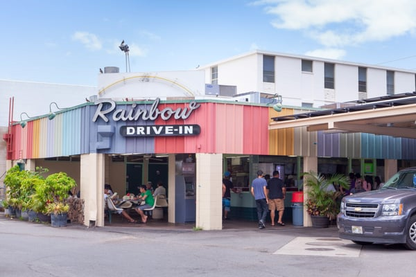
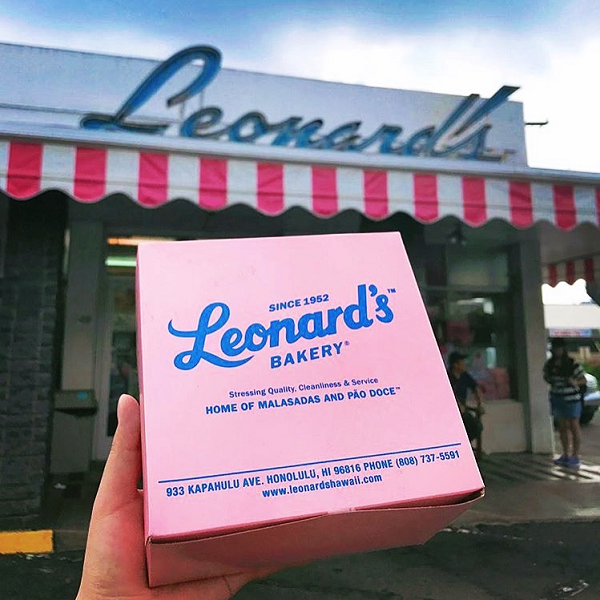
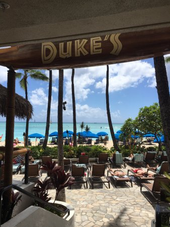
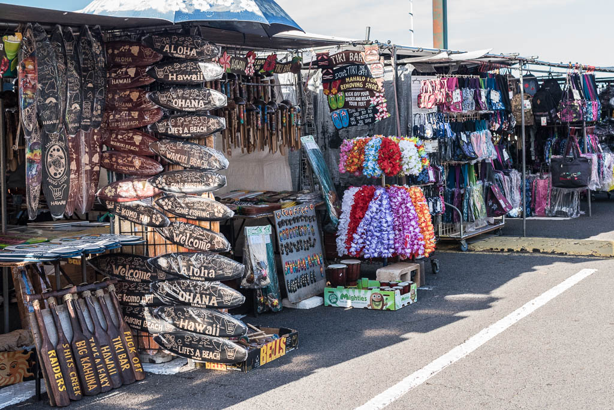
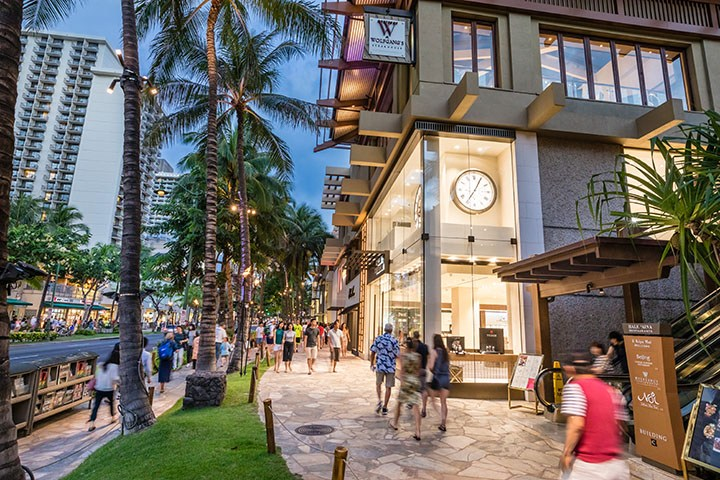

Food
Rainbows
Rainbows Drive-In is an iconic stop in the Waikiki area, serving plate lunches to the area since 1961. I plan on eating here at least a few times during my week long stay.
Leonard's Bakery
Leonard's Bakery is a famous landmark in the Honolulu area, serving malasadas and other amazing baked goods since 1952. Malasadas are a Portuguese donut that melts in your mouth. It's a must visit to anyone visiting the area.
Duke's
Duke's is a beachfront restaurant right on the beach of Waikiki. It's well known for it's laid back atmosphere and amazing selection of tropical foods and drinks. This is actually the first time I will be visiting since I turned 21!
Hot Spots
Waikiki Beach

I will be staying with family at the Royal Hawaiian located on Waikiki Beach. It is one of the more well known beaches in Honolulu, especially when it comes to tourism. I haven't been in almost 15 years but there is always something going on nearby and with the Hawaiian weather, there doesn't need to be in order to have a good time.
Swap Meet
Swap meets are kind of a norm in Hawaiian life. If you are unfamiliar with the term, it's basically a flea market. People come in, set up tents with handmade or foreign bought goods, and sell them for whatever they think it's worth. It's a fun experience and you can get some really cool things for good prices.
Royal Hawaiian Shopping Center
The Royal Hawaiian Shopping Center used to be a small swap meet style shopping area, but in recent years it has turned into the big luxury shopping area. It has a lot of popular brand names and has grown in size as the years have gone by.
Family

This a picture of a small (seriously) poriton of my family living on the islands. I meet new family members every time I go, so it'll be interesting to see how they've been doing in the years I have been gone. I will most likely see everyone in this picture.